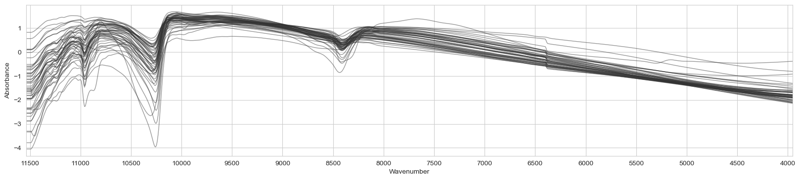
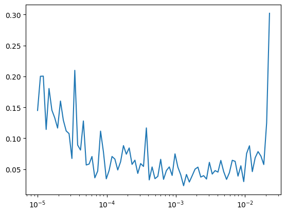

# !pip install --upgrade lssmVisnir LSSM for Kex
Ensembling Resnet, … to predict exchangeable potassium in soil
The autoreload extension is already loaded. To reload it, use:
%reload_ext autoreloadimport lssm
lssm.__version__'0.1.1'Imports
from pathlib import Path
from functools import partial
import fastcore.all as fc
from sklearn.pipeline import Pipeline
from sklearn.model_selection import train_test_split
import numpy as np
import timm
import torch
from torcheval.metrics import R2Score
from torch.optim import lr_scheduler
from torch import optim, nn
from lssm.loading import load_ossl
from lssm.preprocessing import (ToAbsorbance, ContinuumRemoval, MeanCenter,
Log1p, SNV, Interpolate, wl_to_wn)
from lssm.dataloaders import SpectralDataset, get_dls
from lssm.callbacks import (MetricsCB, BatchSchedCB, BatchTransformCB,
DeviceCB, TrainCB, ProgressCB)
from lssm.transforms import GADFTfm, _resizeTfm, StatsTfm
from lssm.learner import Learner
from lssm.visualization import plot_spectraData loading & preprocessing
def stat_wn_wl(wn_wl):
print(f'Length: {len(wn_wl)}, resolution: {wn_wl[-2]- wn_wl[-1]}, max: {np.max(wn_wl)}, min: {np.min(wn_wl)}')# K-spiking experiment data
X_nir_spik, wavenumbers_spik, names_spik = fc.load_pickle('../../_data/nir-k-spiking.pkl')stat_wn_wl(wavenumbers_spik)Length: 949, resolution: 8, max: 11536, min: 3952analytes = 'k.ext_usda.a725_cmolc.kg'
spectra_type = 'visnir'
data = load_ossl(analytes, spectra_type)
X, y, X_names, smp_idx, ds_name, ds_label = data
X_names = wl_to_wn(X_names)Reading & selecting data ...
CPU times: user 26.3 s, sys: 4.48 s, total: 30.8 s
Wall time: 32 sstat_wn_wl(X_names)Length: 1051, resolution: 3.2025620496397096, max: 25000.0, min: 4000.0X = Pipeline([
('interpolate', Interpolate(X_names, wavenumbers_spik)),
# ('mean center', MeanCenter()),
('snv', SNV())
]).fit_transform(X)
X_names = wavenumbers_spik
y = Log1p().fit_transform(y)Falseplot_spectra(X_t, wavenumbers_spik, alpha=0.5, ylabel='Absorbance', ascending=False)<Figure size 640x480 with 0 Axes>
for i, ds in enumerate(ds_label): print(f'{ds_label[i]}: {len(X[ds_name == i])}')ICRAF.ISRIC: 3674
KSSL.SSL: 51
LUCAS.SSL: 40175
LUCAS.WOODWELL.SSL: 589# Train/valid split
n_smp = None # For demo. purpose
X_train, X_valid, y_train, y_valid = train_test_split(X[:n_smp, :], y[:n_smp],
test_size=0.1,
stratify=ds_name[:n_smp],
random_state=41)
# Get PyTorch datasets
train_ds, valid_ds = [SpectralDataset(X, y, )
for X, y, in [(X_train, y_train), (X_valid, y_valid)]]X_train.shape(40040, 949)# Then PyTorch dataloaders
dls = get_dls(train_ds, valid_ds, bs=64)Training
def set_grad(m, b):
if isinstance(m, (nn.Linear,nn.BatchNorm2d)): return
if hasattr(m, 'weight'):
for p in m.parameters(): p.requires_grad_(b)def get_n_params(model, trainable=True):
return sum(p.numel() for p in model.parameters() if p.requires_grad == trainable)Learning from scratch
model_name = 'resnet18'
model = timm.create_model(model_name, pretrained=False,
in_chans=1, num_classes=1)# Define modelling pipeline & Train
epochs = 10
lr = 5e-4
# Define metrics
metrics = MetricsCB(r2=R2Score())
# Define scheduler (how to vary learning rate during training)
tmax = epochs * len(dls.train)
sched = partial(lr_scheduler.OneCycleLR, max_lr=lr, total_steps=tmax)
# Callbacks
xtra = [BatchSchedCB(sched)]
gadf = BatchTransformCB(GADFTfm())
resize = BatchTransformCB(_resizeTfm)
stats = BatchTransformCB(StatsTfm(model.default_cfg))
cbs = [DeviceCB(), gadf, resize, stats, TrainCB(),
metrics, ProgressCB(plot=False)]
learn = Learner(model, dls, nn.HuberLoss(), lr=lr,
cbs=cbs+xtra, opt_func=optim.AdamW)get_n_params(learn.model, trainable=True)11170753learn.fit(epochs)Naive fine-tuning
model_name = 'resnet18'
model = timm.create_model(model_name, pretrained=True,
in_chans=1, num_classes=1)
# Define modelling pipeline & Train
epochs = 5
lr = 5e-4
# Define metrics
metrics = MetricsCB(r2=R2Score())
# Define scheduler (how to vary learning rate during training)
tmax = epochs * len(dls.train)
sched = partial(lr_scheduler.OneCycleLR, max_lr=lr, total_steps=tmax)
# Callbacks
xtra = [BatchSchedCB(sched)]
gadf = BatchTransformCB(GADFTfm())
resize = BatchTransformCB(_resizeTfm)
stats = BatchTransformCB(StatsTfm(model.default_cfg))
cbs = [DeviceCB(), gadf, resize, stats, TrainCB(),
metrics, ProgressCB(plot=False)]
learn = Learner(model, dls, nn.HuberLoss(), lr=lr,
cbs=cbs+xtra, opt_func=optim.AdamW)get_n_params(learn.model, trainable=True)11170753learn.fit(epochs)| r2 | loss | epoch | train |
|---|---|---|---|
| 0.455 | 0.038 | 0 | train |
| 0.439 | 0.040 | 0 | eval |
| 0.652 | 0.025 | 1 | train |
| 0.551 | 0.033 | 1 | eval |
| 0.734 | 0.019 | 2 | train |
| 0.531 | 0.034 | 2 | eval |
| 0.804 | 0.014 | 3 | train |
| 0.790 | 0.015 | 3 | eval |
| 0.860 | 0.010 | 4 | train |
| 0.804 | 0.014 | 4 | eval |
CPU times: user 8min 12s, sys: 2.64 s, total: 8min 15s
Wall time: 8min 12storch.save(learn.model.state_dict(), 'resnet-pretrained-02072024-mir.pth')Predicting
model_name = 'resnet18'
model = timm.create_model(model_name, pretrained=True,
in_chans=1, num_classes=1)
fname_model = "../models/resnet-pretrained-03072024-mir-k-spiking.pth"
model.load_state_dict(torch.load(fname_model, map_location=torch.device('cpu')))
# Define modelling pipeline & Train
epochs = 1
lr = 5e-4
# Define metrics
metrics = MetricsCB(r2=R2Score())
# Define scheduler (how to vary learning rate during training)
tmax = epochs * len(dls.train)
sched = partial(lr_scheduler.OneCycleLR, max_lr=lr, total_steps=tmax)
# Callbacks
xtra = [BatchSchedCB(sched)]
gadf = BatchTransformCB(GADFTfm())
resize = BatchTransformCB(_resizeTfm)
stats = BatchTransformCB(StatsTfm(model.default_cfg))
cbs = [DeviceCB(device='cpu'), gadf, resize, stats, TrainCB(),
metrics]
learn = Learner(model, dls, nn.HuberLoss(), lr=lr,
cbs=cbs+xtra, opt_func=optim.AdamW)learn.fit(epochs)# learn.model = model# X_mir_spik, wavenumbers_spik, names_spik = fc.load_pickle('../../_data/mir-k-spiking.pkl')names_spikarray(['LUI-0-0', 'LUI-0-1', 'LUI-0-2', 'LUI-0-3', 'LUI-0-4', 'LUI-1-0',
'LUI-1-1', 'LUI-1-2', 'LUI-1-3', 'LUI-1-4', 'LUI-2-0', 'LUI-2-1',
'LUI-2-2', 'LUI-2-3', 'LUI-2-4', 'LUI-3-0', 'LUI-3-1', 'LUI-3-2',
'LUI-3-3', 'LUI-3-4', 'SPA1-0-0', 'SPA1-0-2', 'SPA1-0-3',
'SPA1-0-4', 'SPA1-1-0', 'SPA1-1-1', 'SPA1-1-2', 'SPA1-1-3',
'SPA1-1-4', 'SPA1-2-0', 'SPA1-2-1', 'SPA1-2-2', 'SPA1-2-3',
'SPA1-2-4', 'SPA1-3-0', 'SPA1-3-1', 'SPA1-3-2', 'SPA1-3-3',
'SPA1-3-4', 'TM4.1-0-0', 'TM4.1-0-1', 'TM4.1-0-2', 'TM4.1-0-3',
'TM4.1-0-4', 'TM4.1-0-5', 'TM4.1-1-0', 'TM4.1-1-1', 'TM4.1-1-2',
'TM4.1-1-3', 'TM4.1-2-0', 'TM4.1-2-1', 'TM4.1-2-2', 'TM4.1-2-3',
'TM4.1-3-0', 'TM4.1-3-1', 'TM4.1-3-2', 'TM4.1-3-3', 'TM4.1-3-4'],
dtype='<U9')np.mean(np.expm1(y))0.6474079249216373def predict(X, substring, names, learn):
mask = [substring in name for name in names_spik]
return learn.get_preds(X[mask], y_tfm_fn=np.expm1)
for smp_name in ['LUI', 'SPA1', 'TM4.1']:
print(f'Sample name: {smp_name}')
for substring in [f'{smp_name}-{i}' for i in range(4)]:
preds = predict(X_mir_spik, substring, names_spik, learn)
print(f'Spiking level: {substring}, mean: {np.mean(preds):.3}, std: {np.std(preds):.3}')
print(80*'-')Sample name: LUI
Spiking level: LUI-0, mean: 0.238, std: 0.02
Spiking level: LUI-1, mean: 0.266, std: 0.0293
Spiking level: LUI-2, mean: 0.179, std: 0.0602
Spiking level: LUI-3, mean: 0.232, std: 0.0399
--------------------------------------------------------------------------------
Sample name: SPA1
Spiking level: SPA1-0, mean: 2.26, std: 0.459
Spiking level: SPA1-1, mean: 2.29, std: 0.249
Spiking level: SPA1-2, mean: 3.16, std: 0.974
Spiking level: SPA1-3, mean: 2.88, std: 0.38
--------------------------------------------------------------------------------
Sample name: TM4.1
Spiking level: TM4.1-0, mean: 0.702, std: 0.297
Spiking level: TM4.1-1, mean: 0.329, std: 0.22
Spiking level: TM4.1-2, mean: 0.667, std: 0.0986
Spiking level: TM4.1-3, mean: 0.409, std: 0.057
--------------------------------------------------------------------------------Freezing batch norm & linear layers
model_name = 'resnet18'
model = timm.create_model(model_name, pretrained=True,
in_chans=1, num_classes=1)
# Define modelling pipeline & Train
epochs = 3
lr = 5e-4
# Define metrics
metrics = MetricsCB(r2=R2Score())
# Define scheduler (how to vary learning rate during training)
tmax = epochs * len(dls.train)
sched = partial(lr_scheduler.OneCycleLR, max_lr=lr, total_steps=tmax)
# Callbacks
xtra = [BatchSchedCB(sched)]
gadf = BatchTransformCB(GADFTfm())
resize = BatchTransformCB(_resizeTfm)
stats = BatchTransformCB(StatsTfm(model.default_cfg))
cbs = [DeviceCB(), gadf, resize, stats, TrainCB(),
metrics, ProgressCB(plot=False)]
learn = Learner(model, dls, nn.HuberLoss(), lr=lr,
cbs=cbs+xtra, opt_func=optim.AdamW)learn.model.apply(partial(set_grad, b=False));get_n_params(learn.model, trainable=True)10113learn.fit(epochs)| r2 | loss | epoch | train |
|---|---|---|---|
| 0.154 | 0.058 | 0 | train |
| 0.433 | 0.041 | 0 | eval |
| 0.473 | 0.037 | 1 | train |
| 0.507 | 0.035 | 1 | eval |
| 0.526 | 0.033 | 2 | train |
| 0.535 | 0.033 | 2 | eval |
CPU times: user 3min 40s, sys: 4.66 s, total: 3min 44s
Wall time: 3min 39s# Now unfreeze all
learn.model.apply(partial(set_grad, b=True));get_n_params(learn.model, trainable=True)11170753learn.fit(epochs)| r2 | loss | epoch | train |
|---|---|---|---|
| 0.578 | 0.030 | 0 | train |
| 0.201 | 0.057 | 0 | eval |
| 0.698 | 0.021 | 1 | train |
| 0.731 | 0.020 | 1 | eval |
| 0.802 | 0.014 | 2 | train |
| 0.780 | 0.016 | 2 | eval |
CPU times: user 4min 43s, sys: 5.23 s, total: 4min 48s
Wall time: 4min 42sLearning rate finder
model_name = 'resnet18'
model = timm.create_model(model_name, pretrained=False,
in_chans=1, num_classes=1)# Define modelling pipeline & Train
epochs = 3
lr = 5e-3
metrics = MetricsCB(r2=R2Score())
tmax = epochs * len(dls.train)
gadf = BatchTransformCB(GADFTfm())
resize = BatchTransformCB(_resizeTfm)
stats = BatchTransformCB(StatsTfm(model.default_cfg))
cbs = [DeviceCB(), gadf, resize, stats, TrainCB(),
metrics, ProgressCB(plot=False)]
learn = Learner(model, dls, nn.HuberLoss(), lr=lr,
cbs=cbs, opt_func=optim.AdamW)# gamma=1.3, max_mult=3, start_lr=1e-5, max_epochs=10
learn.lr_find(gamma=1.1,start_lr=1e-5, max_mult=10)
0.00% [0/10 00:00<?]
9.98% [81/812 00:09<01:21 0.125]
